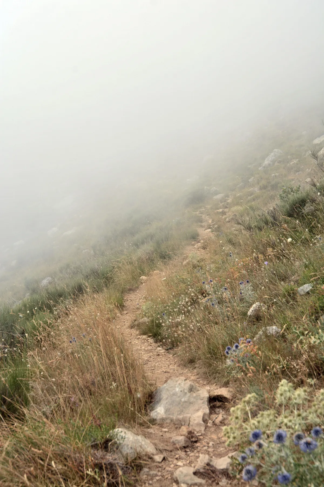

Serdülőkonzultáció
A kamaszkor számos változással jár együtt. A hormonális és testi változások mellett változik az énkép és a kapcsolatok, barátságok is átrendeződnek. Ezek mellett gyakran érzelmi hullámvasutat élhetnek meg a kamaszok. Ezek a változások nem csak a serdülőnek, hanem a szülőknek is kihívást jelenthetnek.
Mikor érdemes serdülőkonzultációt igénybe venni?
- Gyakori szorongás, lehangoltság, motivációhiány
- Beilleszkedési nehézségek, iskolai bántalmazás (bullying)
- Romló tanulmányi eredmény, koncentrációhiány
- Alacsony önbizalom, önértékelés
- Testképpel, énképpel kapcsolatos kérdések, problémák
- Neurodiverzitás nehézségei esetén(ADHD, autizmus, hiperérzékenység)
Hogyan zajlik a közös munka?
Tudom, hogy kamaszként néha nagyon nehéz megnyílni, és szavakba önteni, hogy mi bánt. Ebben próbálok segítséget nyújtani egy ítélkezés mentes, elfogadó légkör biztosításával.
- 12 éves kortól fogadok serdülőket
- Az adott problémához kapcsolódóan alkalmazhatunk a közös munkában művészetterápiát az adott problémára szabottan (képzőművészet, zene, valamint meseterápiát), kognitív viselkedésterápiás eszközöket, valamint relaxációt.
- A serdülőkkel való munkának fontos részét képezik a szülőkonzultációk, illetve igény esetén a nevelési tanácsadás.
- Az első találkozás - életkortól függően - általában közös alkalom a szülővel/szülőkkel és a kamasszal. Ennek során anamnézis felvétele történik a szülővel.